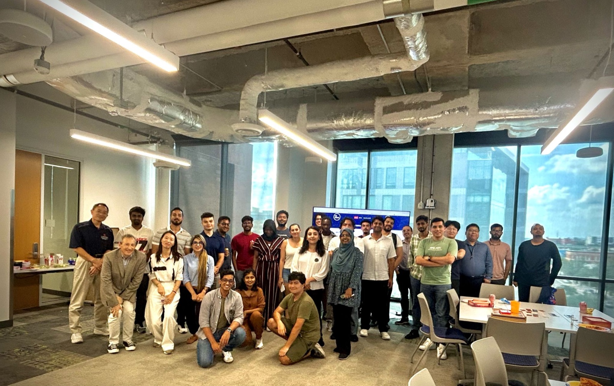

Past Events
A look back at what we've been up to.
-

Game + Mingling
Our fall kickoff! We gathered CS students and faculty in the San Pedro I for an evening of board games, pizza, and hanging out. Codenames, backgammon, and UNO were on rotation while returning members introduced themselves to first-years and swapped stories about labs, courses, and life in San Antonio. A relaxed way to start the semester and put faces to the names on Discord.
With special appearances from the department chair, Dr. Fred Martin and assistant department chair, Dr. Dakai Zhu.